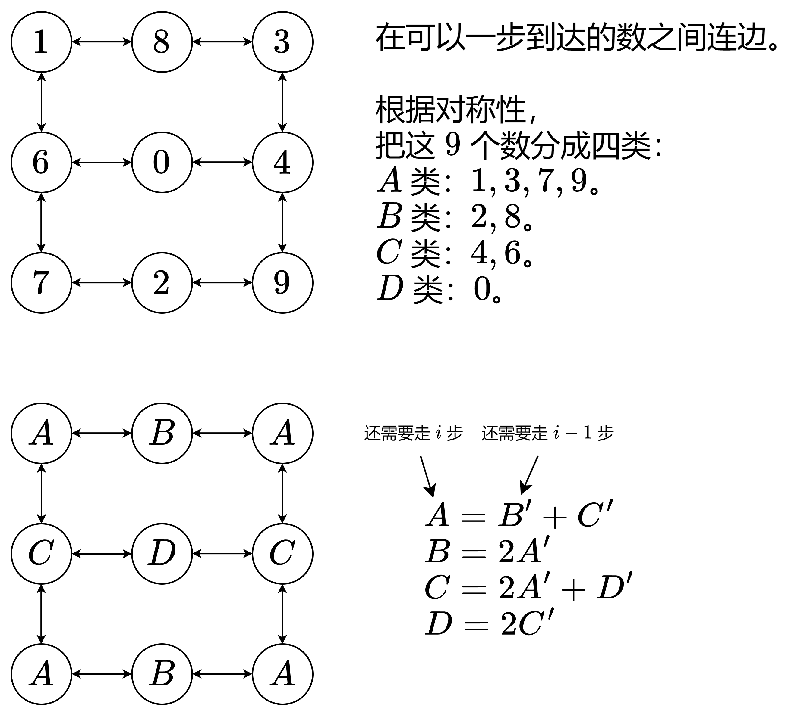

力扣链接:935. 骑士拨号器
力扣难度 中等
算法评级: 5 熟练掌握常用数据结构和算法，初步了解高级数据结构
难度分 1690
题目:
象棋骑士有一个独特的移动方式，它可以垂直移动两个方格，水平移动一个方格，或者水平移动两个方格，垂直移动一个方格(两者都形成一个 L 的形状)。
象棋骑士可能的移动方式如下图所示:
 我们有一个象棋骑士和一个电话垫，如下所示，骑士只能站在一个数字单元格上(即蓝色单元格)。
我们有一个象棋骑士和一个电话垫，如下所示，骑士只能站在一个数字单元格上(即蓝色单元格)。
 给定一个整数 n，返回我们可以拨多少个长度为 n 的不同电话号码。
给定一个整数 n，返回我们可以拨多少个长度为 n 的不同电话号码。
你可以将骑士放置在任何数字单元格上，然后你应该执行 n - 1 次移动来获得长度为 n 的号码。所有的跳跃应该是有效的骑士跳跃。
因为答案可能很大，所以输出答案模 109 + 7.
示例 1：
输入：n = 1 输出：10 解释：我们需要拨一个长度为1的数字，所以把骑士放在10个单元格中的任何一个数字单元格上都能满足条件。
示例 2：
输入：n = 2 输出：20 解释：我们可以拨打的所有有效号码为[04, 06, 16, 18, 27, 29, 34, 38, 40, 43, 49, 60, 61, 67, 72, 76, 81, 83, 92, 94]
示例 3：
输入：n = 3131 输出：136006598 解释：注意取模
func knightDialer(n int) int {
}
化成子问题
站在x数字上往y，剩余n 深度遍历就可以解出问题
暴力递归
var dirs = map[int][]int{
0: {4, 6}, // 04, 06
1: {6, 8}, // 16, 18
2: {7, 9}, // 27, 29
3: {4, 8}, // 34, 38
4: {0, 3, 9}, // 40, 43, 49
6: {0, 1, 7}, // 60, 61, 67
7: {2, 6}, // 72, 76
8: {1, 3}, // 81, 83
9: {2, 4}, // 92, 94
}
func knightDialer(n int) (ans int) {
mod := 1000000000 + 7
var dfs func(int, int) int
dfs = func(y, n int) int {
if n == 0 {
return 1
}
ans := 0
for _, v := range dirs[y] {
ans += dfs(v, n-1)
}
return ans % mod
}
for i := 0; i < 10; i++ {
ans += dfs(i, n-1)
}
return ans % mod
}
记忆化递归
var dirs = map[int][]int{
0: {4, 6}, // 04, 06
1: {6, 8}, // 16, 18
2: {7, 9}, // 27, 29
3: {4, 8}, // 34, 38
4: {0, 3, 9}, // 40, 43, 49
6: {0, 1, 7}, // 60, 61, 67
7: {2, 6}, // 72, 76
8: {1, 3}, // 81, 83
9: {2, 4}, // 92, 94
}
func knightDialer(n int) (ans int) {
mod := 1000000000 + 7
memo := make([][]int, 10) // memo[y][n]
for i := 0; i < 10; i++ {
memo[i] = make([]int, n)
}
var dfs func(int, int) int
dfs = func(y, n int) int {
if n == 0 {
return 1
}
ans := 0
for _, v := range dirs[y] {
if memo[v][n-1] != 0 {
ans += memo[v][n-1]
} else {
ans += dfs(v, n-1)
}
}
ans %= mod
memo[y][n] = ans
return ans
}
for i := 0; i < 10; i++ {
ans += dfs(i, n-1)
}
return ans % mod
}
状态定义与状态转移方程（优化后）
将9个数分为4类 A: 1,3,7,9 B: 2,8 C: 4,6 D: 0
分别的状态转移方程 dfs(i,0)=dfs(i−1,1)+dfs(i−1,2) dfs(i,1)=2⋅dfs(i−1,0) dfs(i,2)=2⋅dfs(i−1,0)+dfs(i−1,3) dfs(i,3)=2⋅dfs(i−1,2)
4⋅dfs(n−1,0)+2⋅dfs(n−1,1)+2⋅dfs(n−1,2)+dfs(n−1,3)
